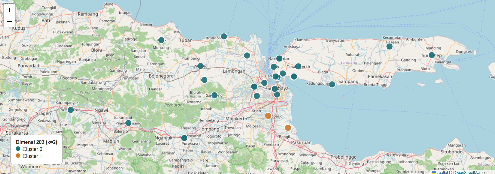
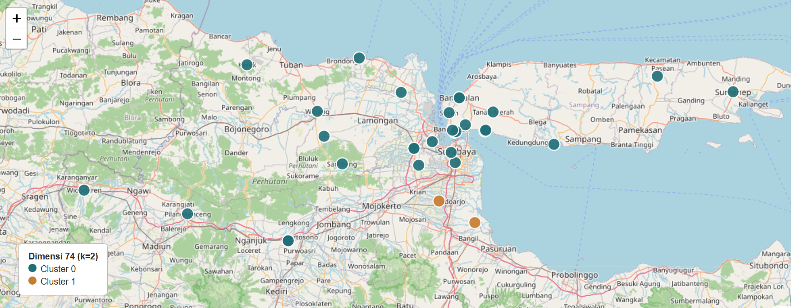
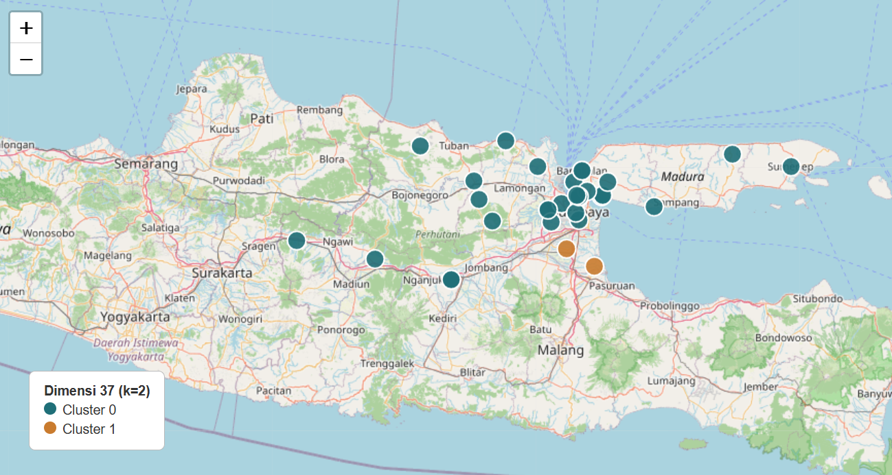
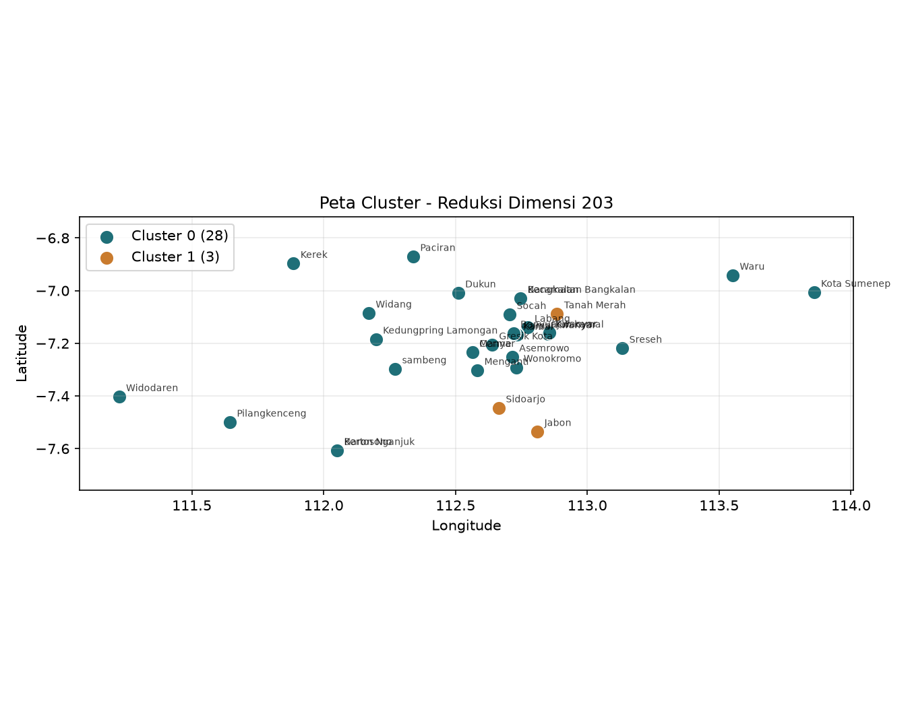
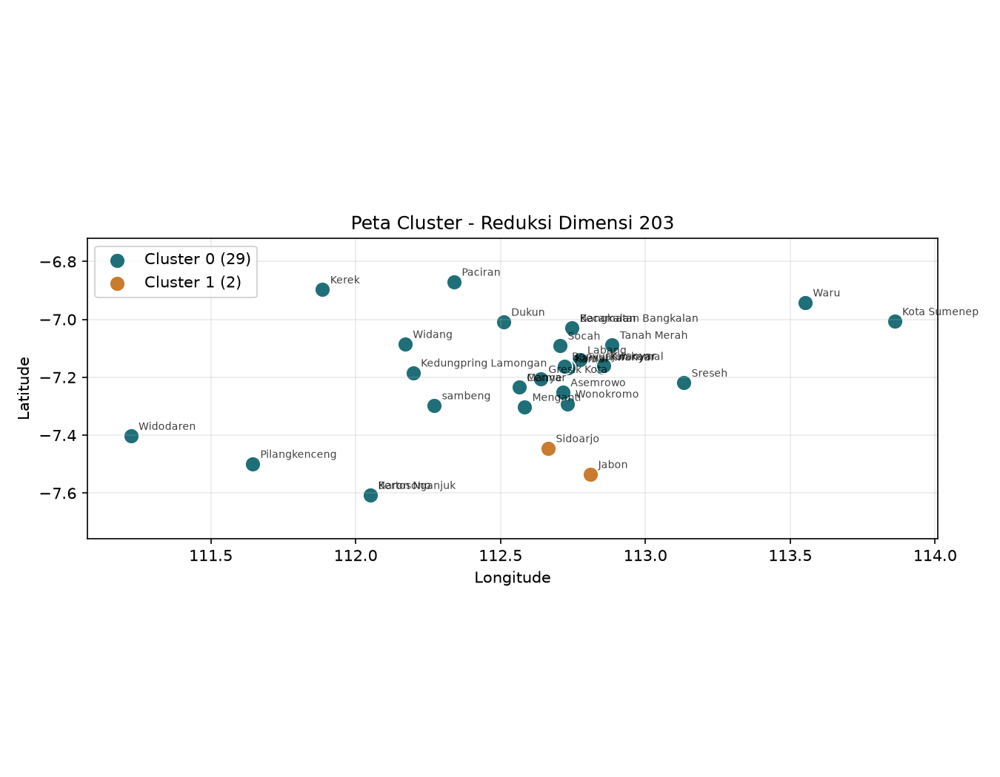
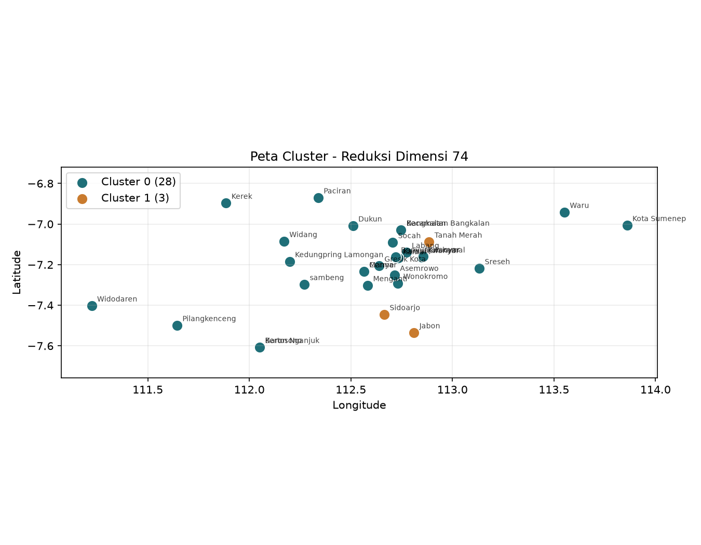
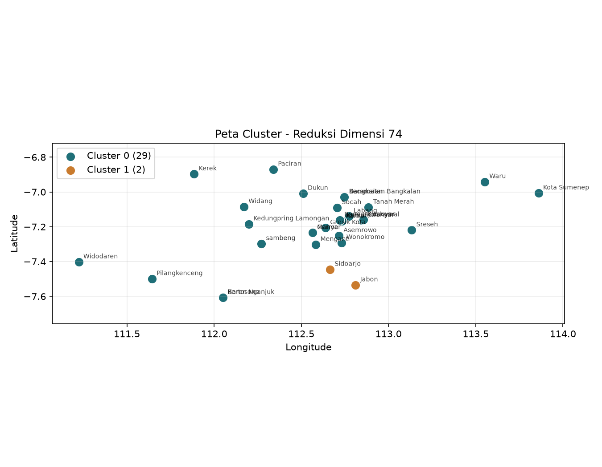

Eksperimen PCA 3 Level Dimensi untuk Clustering Kecamatan Berdasarkan 3 Polutan#
Deskripsi#
Eksperimen ini bertujuan untuk menganalisis pola kemiripan antar kecamatan berdasarkan data kualitas udara yang telah diekstraksi menjadi fitur statistik dan temporal dari tiga polutan.
Metode yang digunakan meliputi:
Penggabungan data tiga polutan.
Ekstraksi fitur.
Reduksi dimensi menggunakan PCA.
Clustering menggunakan K-Means.
Evaluasi menggunakan Silhouette Score.
Visualisasi spasial hasil clustering.
Dataset#
Dataset hasil ekstraksi fitur terdiri dari:
37 kecamatan
204 fitur numerik
Kolom identitas:
id
nama
daerah
Ketiga kolom tersebut tidak digunakan dalam proses PCA dan clustering.
Tujuan Eksperimen#
Menguji pengaruh jumlah dimensi PCA terhadap hasil clustering.
Tiga target dimensi yang diuji:
Level |
Target Dimensi |
|---|---|
Tinggi |
203 |
Menengah |
74 |
Rendah |
37 |
Namun karena jumlah sampel hanya 37 kecamatan, PCA secara matematis hanya dapat menghasilkan:
n_sampel - 1 = 36 komponen
Sehingga seluruh eksperimen akhirnya menggunakan maksimum 36 komponen PCA.
Eksperimen Fitur Polynomial#
Perintah#
python eksperimen_pca_3level.py ekstraksi_fitur_polynomial.csv polynomial
Hasil#
Dataset:
37 kecamatan x 204 fitur
Seluruh target dimensi dibatasi menjadi:
36 komponen
karena keterbatasan jumlah sampel.
Ringkasan Hasil#
Target Dimensi |
Komponen Dipakai |
Varians Dijelaskan (%) |
k Terbaik |
Silhouette Score |
|---|---|---|---|---|
203 |
36 |
100.0 |
2 |
0.5375 |
74 |
36 |
100.0 |
2 |
0.5375 |
37 |
36 |
100.0 |
2 |
0.5375 |
Interpretasi#
Seluruh konfigurasi menghasilkan jumlah cluster optimal sebanyak 2.
Nilai Silhouette Score sebesar 0.5375 menunjukkan pemisahan cluster yang cukup baik.
Karena seluruh target dimensi akhirnya menggunakan 36 komponen PCA, hasil clustering menjadi identik pada ketiga skenario.
Output#
hasil_clustering_3level_polynomial.csv
Visualisasi:

peta-cluster-polynomial-dim203
peta-cluster-polynomial-dim74
peta-cluster-polynomial-dim37Gambar:

peta-dim203 linear
peta-dim203 polynomial
peta-dim74 linear
peta-dim74 polynomialpeta-dim37 linear
peta-dim37 polynomial
Eksperimen Fitur Linear#
Perintah#
python eksperimen_pca_3level.py ekstraksi_fitur_linear.csv linear
Hasil#
Dataset:
37 kecamatan x 204 fitur
Seperti eksperimen sebelumnya, PCA dibatasi menjadi:
36 komponen
Ringkasan Hasil#
Target Dimensi |
Komponen Dipakai |
Varians Dijelaskan (%) |
k Terbaik |
Silhouette Score |
|---|---|---|---|---|
203 |
36 |
100.0 |
2 |
0.4909 |
74 |
36 |
100.0 |
2 |
0.4909 |
37 |
36 |
100.0 |
2 |
0.4909 |
Interpretasi#
Seluruh konfigurasi menghasilkan 2 cluster sebagai jumlah cluster optimal.
Nilai Silhouette Score sebesar 0.4909 menunjukkan kualitas cluster yang cukup baik namun sedikit lebih rendah dibanding pendekatan Polynomial.
Reduksi dimensi tidak memengaruhi hasil karena seluruh konfigurasi menggunakan jumlah komponen PCA yang sama.
Output#
hasil_clustering_3level_linear.csv
Visualisasi:
peta-cluster-linear-dim203.html
peta-cluster-linear-dim74.html
peta-cluster-linear-dim37.html
Gambar:
peta-dim203.png
peta-dim74.png
peta-dim37.png
Perbandingan Linear dan Polynomial#
Metode |
Silhouette Score |
|---|---|
Polynomial |
0.5375 |
Linear |
0.4909 |
Analisis#
Pendekatan Polynomial menghasilkan nilai Silhouette Score yang lebih tinggi dibandingkan pendekatan Linear.
Polynomial : 0.5375
Linear : 0.4909
Hal ini menunjukkan bahwa fitur Polynomial mampu merepresentasikan hubungan antar variabel polutan dengan lebih baik, sehingga menghasilkan pemisahan cluster yang lebih jelas.
Geocoding Kecamatan#
Untuk visualisasi spasial, sistem melakukan geocoding otomatis terhadap kecamatan yang belum memiliki koordinat.
Output:
koordinat_kecamatan.csv
Beberapa lokasi tidak berhasil ditemukan secara otomatis sehingga perlu diperiksa dan diisi secara manual:
Bandung - Jogoroto, Jombang
Banyu Ajuh, Perumnas, Kamal
Kec. Kalianget, Sumenep
Setelah koordinat dilengkapi, eksperimen dijalankan kembali untuk menghasilkan peta cluster yang lengkap.
Kesimpulan#
Dataset terdiri dari 37 kecamatan dengan 204 fitur hasil ekstraksi dari tiga polutan.
PCA dibatasi pada 36 komponen karena jumlah sampel hanya 37.
Seluruh skenario dimensi menghasilkan jumlah cluster optimal sebanyak 2.
Metode Polynomial menghasilkan kualitas cluster terbaik dengan Silhouette Score 0.5375.
Metode Linear menghasilkan Silhouette Score 0.4909.
Berdasarkan hasil evaluasi, pendekatan Polynomial lebih baik dalam memisahkan karakteristik kecamatan berdasarkan data polutan yang dianalisis.